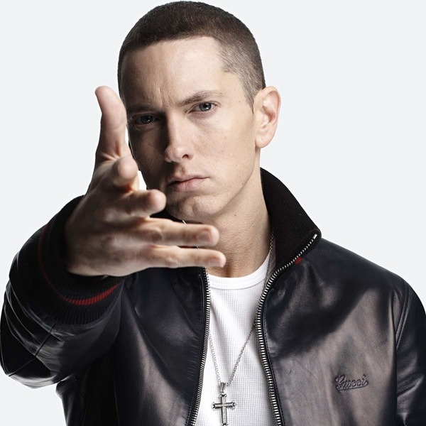

Eminem
Nombre real: Marshall Bruce Mathers III
Nacionalidad: Estadounidense
Nacimiento: St. Joseph, Estados Unidos, 1972
Apodo: Slim Shady
Discos destacados:
- The Eminem Show
- The Marshall Mathers LP
- The Slim Shady LP
- The Marshall Mathers LP 2
- Relapse
Premios ganados:
- Premio Grammy al mejor álbum rapero (2015)
- Premio Grammy a la mejor interpretación rapera melódica (2015)
- Óscar a la mejor canción original (2003)